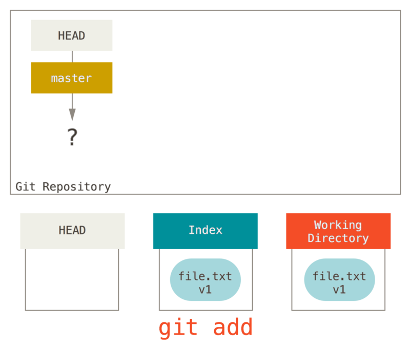
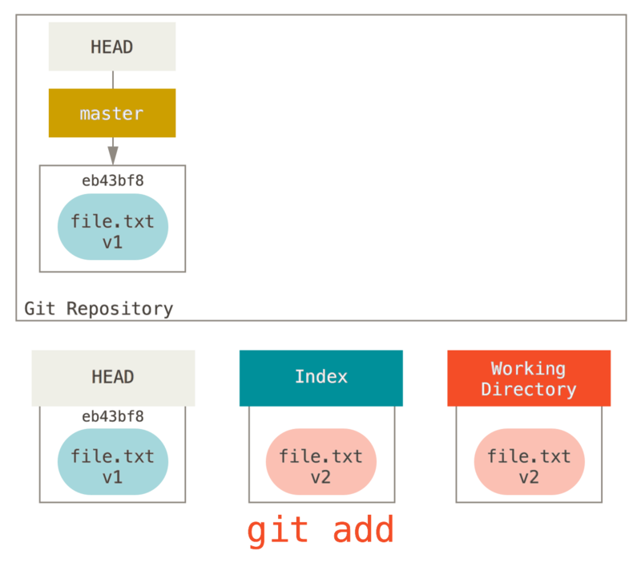
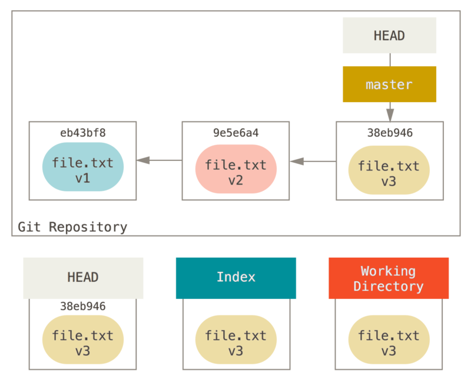
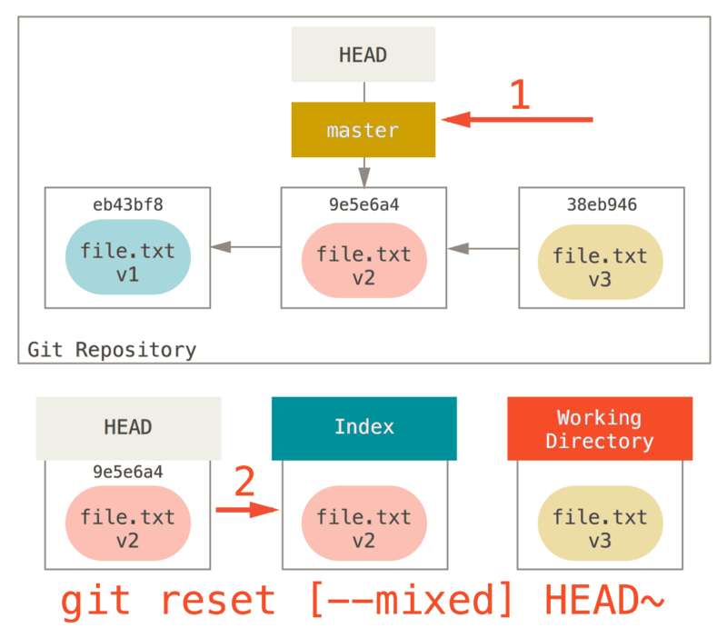

$ git cat-file -p HEAD
tree cfda3bf379e4f8dba8717dee55aab78aef7f4daf
author Scott Chacon 1301511835 -0700
committer Scott Chacon 1301511835 -0700
initial commit
$ git ls-tree -r HEAD
100644 blob a906cb2a4a904a152... README
100644 blob 8f94139338f9404f2... Rakefile
040000 tree 99f1a6d12cb4b6f19... lib重置揭密
在继续了解更专业的工具前，我们先讨论一下 reset 与 checkout。
在你初次遇到的 Git 命令中，这两个是最让人困惑的。
它们能做很多事情，所以看起来我们很难真正地理解并恰当地运用它们。
针对这一点，我们先来做一个简单的比喻。
三棵树
理解 reset 和 checkout 的最简方法，就是以 Git 的思维框架（将其作为内容管理器）来管理三棵不同的树。
树'' 在我们这里的实际意思是 文件的集合''，而不是指特定的数据结构。
（在某些情况下索引看起来并不像一棵树，不过我们现在的目的是用简单的方式思考它。）
Git 作为一个系统，是以它的一般操作来管理并操纵这三棵树的：
| 树 | 用途 |
|---|---|
HEAD |
上一次提交的快照，下一次提交的父结点 |
Index |
预期的下一次提交的快照 |
Working Directory |
沙盒 |
HEAD
HEAD 是当前分支引用的指针，它总是指向该分支上的最后一次提交。 这表示 HEAD 将是下一次提交的父结点。 通常，理解 HEAD 的最简方式，就是将它看做 你的上一次提交 的快照。
其实，查看快照的样子很容易。 下例就显示了 HEAD 快照实际的目录列表，以及其中每个文件的 SHA-1 校验和：
cat-file 与 ls-tree 是底层命令，它们一般用于底层工作，在日常工作中并不使用。不过它们能帮助我们了解到底发生了什么。
索引
索引是你的 预期的下一次提交。
我们也会将这个概念引用为 Git 的 `暂存区域''，这就是当你运行 `git commit 时 Git 看起来的样子。
Git 将上一次检出到工作目录中的所有文件填充到索引区，它们看起来就像最初被检出时的样子。
之后你会将其中一些文件替换为新版本，接着通过 git commit 将它们转换为树来用作新的提交。
$ git ls-files -s
100644 a906cb2a4a904a152e80877d4088654daad0c859 0 README
100644 8f94139338f9404f26296befa88755fc2598c289 0 Rakefile
100644 47c6340d6459e05787f644c2447d2595f5d3a54b 0 lib/simplegit.rb再说一次，我们在这里又用到了 ls-files 这个幕后的命令，它会显示出索引当前的样子。
确切来说，索引并非技术上的树结构，它其实是以扁平的清单实现的。不过对我们而言，把它当做树就够了。
工作目录
最后，你就有了自己的工作目录。
另外两棵树以一种高效但并不直观的方式，将它们的内容存储在 .git 文件夹中。
工作目录会将它们解包为实际的文件以便编辑。
你可以把工作目录当做 沙盒。在你将修改提交到暂存区并记录到历史之前，可以随意更改。
$ tree
.
├── README
├── Rakefile
└── lib
└── simplegit.rb
1 directory, 3 files工作流程
Git 主要的目的是通过操纵这三棵树来以更加连续的状态记录项目的快照。

让我们来可视化这个过程：假设我们进入到一个新目录，其中有一个文件。
我们称其为该文件的 v1 版本，将它标记为蓝色。
现在运行 git init，这会创建一个 Git 仓库，其中的 HEAD 引用指向未创建的分支（master 还不存在）。

此时，只有工作目录有内容。
现在我们想要提交这个文件，所以用 git add 来获取工作目录中的内容，并将其复制到索引中。

接着运行 git commit，它首先会移除索引中的内容并将它保存为一个永久的快照，然后创建一个指向该快照的提交对象，最后更新 master 来指向本次提交。

此时如果我们运行 git status，会发现没有任何改动，因为现在三棵树完全相同。
现在我们想要对文件进行修改然后提交它。 我们将会经历同样的过程；首先在工作目录中修改文件。 我们称其为该文件的 v2 版本，并将它标记为红色。

如果现在运行 git status，我们会看到文件显示在 `Changes not staged for commit,'' 下面并被标记为红色，因为该条目在索引与工作目录之间存在不同。
接着我们运行 `git add 来将它暂存到索引中。

此时，由于索引和 HEAD 不同，若运行 git status 的话就会看到 `Changes to be committed'' 下的该文件变为绿色
——也就是说，现在预期的下一次提交与上一次提交不同。
最后，我们运行 `git commit 来完成提交。

现在运行 git status 会没有输出，因为三棵树又变得相同了。
切换分支或克隆的过程也类似。 当检出一个分支时，它会修改 HEAD 指向新的分支引用，将 索引 填充为该次提交的快照，然后将 索引 的内容复制到 工作目录 中。
重置的作用
在以下情景中观察 reset 命令会更有意义。
为了演示这些例子，假设我们再次修改了 file.txt 文件并第三次提交它。
现在的历史看起来是这样的：

让我们跟着 reset 看看它都做了什么。
它以一种简单可预见的方式直接操纵这三棵树。
它做了三个基本操作。
第 1 步：移动 HEAD
reset 做的第一件事是移动 HEAD 的指向。
这与改变 HEAD 自身不同（checkout 所做的）；reset 移动 HEAD 指向的分支。
这意味着如果 HEAD 设置为 master 分支（例如，你正在 master 分支上），运行 git reset 9e5e64a 将会使 master 指向 9e5e64a。

无论你调用了何种形式的带有一个提交的 reset，它首先都会尝试这样做。
使用 reset --soft，它将仅仅停在那儿。
现在看一眼上图，理解一下发生的事情：它本质上是撤销了上一次 git commit 命令。
当你在运行 git commit 时，Git 会创建一个新的提交，并移动 HEAD 所指向的分支来使其指向该提交。
当你将它 reset 回 HEAD~（HEAD 的父结点）时，其实就是把该分支移动回原来的位置，而不会改变索引和工作目录。
现在你可以更新索引并再次运行 git commit 来完成 git commit --amend 所要做的事情了（见 [_git_amend]）。
第 2 步：更新索引（--mixed）
注意，如果你现在运行 git status 的话，就会看到新的 HEAD 和以绿色标出的它和索引之间的区别。
接下来，reset 会用 HEAD 指向的当前快照的内容来更新索引。

如果指定 --mixed 选项，reset 将会在这时停止。
这也是默认行为，所以如果没有指定任何选项（在本例中只是 git reset HEAD~），这就是命令将会停止的地方。
现在再看一眼上图，理解一下发生的事情：它依然会撤销一上次 提交，但还会 取消暂存 所有的东西。
于是，我们回滚到了所有 git add 和 git commit 的命令执行之前。
第 3 步：更新工作目录（--hard）
reset 要做的的第三件事情就是让工作目录看起来像索引。
如果使用 --hard 选项，它将会继续这一步。

现在让我们回想一下刚才发生的事情。
你撤销了最后的提交、git add 和 git commit 命令以及工作目录中的所有工作。
必须注意，--hard 标记是 reset 命令唯一的危险用法，它也是 Git 会真正地销毁数据的仅有的几个操作之一。
其他任何形式的 reset 调用都可以轻松撤消，但是 --hard 选项不能，因为它强制覆盖了工作目录中的文件。
在这种特殊情况下，我们的 Git 数据库中的一个提交内还留有该文件的 v3 版本，我们可以通过 reflog 来找回它。但是若该文件还未提交，Git 仍会覆盖它从而导致无法恢复。
回顾
reset 命令会以特定的顺序重写这三棵树，在你指定以下选项时停止：
-
移动 HEAD 分支的指向 （若指定了
--soft，则到此停止） -
使索引看起来像 HEAD （若未指定
--hard，则到此停止） -
使工作目录看起来像索引
通过路径来重置
前面讲述了 reset 基本形式的行为，不过你还可以给它提供一个作用路径。
若指定了一个路径，reset 将会跳过第 1 步，并且将它的作用范围限定为指定的文件或文件集合。
这样做自然有它的道理，因为 HEAD 只是一个指针，你无法让它同时指向两个提交中各自的一部分。
不过索引和工作目录 可以部分更新，所以重置会继续进行第 2、3 步。
现在，假如我们运行 git reset file.txt
（这其实是 git reset --mixed HEAD file.txt 的简写形式，因为你既没有指定一个提交的 SHA-1 或分支，也没有指定 --soft 或 --hard），它会：
-
移动 HEAD 分支的指向 （已跳过）
-
让索引看起来像 HEAD （到此处停止）
所以它本质上只是将 file.txt 从 HEAD 复制到索引中。

它还有 取消暂存文件 的实际效果。
如果我们查看该命令的示意图，然后再想想 git add 所做的事，就会发现它们正好相反。
这就是为什么 git status 命令的输出会建议运行此命令来取消暂存一个文件。
（查看 [_unstaging] 来了解更多。）
我们可以不让 Git 从 HEAD 拉取数据，而是通过具体指定一个提交来拉取该文件的对应版本。
我们只需运行类似于 git reset eb43bf file.txt 的命令即可。

它其实做了同样的事情，也就是把工作目录中的文件恢复到 v1 版本，运行 git add 添加它，然后再将它恢复到 v3 版本（只是不用真的过一遍这些步骤）。
如果我们现在运行 git commit，它就会记录一条“将该文件恢复到 v1 版本”的更改，尽管我们并未在工作目录中真正地再次拥有它。
还有一点同 git add 一样，就是 reset 命令也可以接受一个 --patch 选项来一块一块地取消暂存的内容。
这样你就可以根据选择来取消暂存或恢复内容了。
压缩
我们来看看如何利用这种新的功能来做一些有趣的事情 - 压缩提交。
假设你的一系列提交信息中有 oops.''、WIP'' 和 `forgot this file''，
聪明的你就能使用 `reset 来轻松快速地将它们压缩成单个提交，也显出你的聪明。
（[_squashing] 展示了另一种方式，不过在本例中用 reset 更简单。）
假设你有一个项目，第一次提交中有一个文件，第二次提交增加了一个新的文件并修改了第一个文件，第三次提交再次修改了第一个文件。 由于第二次提交是一个未完成的工作，因此你想要压缩它。

那么可以运行 git reset --soft HEAD~2 来将 HEAD 分支移动到一个旧一点的提交上（即你想要保留的第一个提交）：

然后只需再次运行 git commit：

现在你可以查看可到达的历史，即将会推送的历史，现在看起来有个 v1 版 file-a.txt 的提交，接着第二个提交将 file-a.txt 修改成了 v3 版并增加了 file-b.txt。
包含 v2 版本的文件已经不在历史中了。
检出
最后，你大概还想知道 checkout 和 reset 之间的区别。
和 reset 一样，checkout 也操纵三棵树，不过它有一点不同，这取决于你是否传给该命令一个文件路径。
不带路径
运行 git checkout [branch] 与运行 git reset --hard [branch] 非常相似，它会更新所有三棵树使其看起来像 [branch]，不过有两点重要的区别。
首先不同于 reset --hard，checkout 对工作目录是安全的，它会通过检查来确保不会将已更改的文件吹走。
其实它还更聪明一些。它会在工作目录中先试着简单合并一下，这样所有还未修改过的文件都会被更新。
而 reset --hard 则会不做检查就全面地替换所有东西。
第二个重要的区别是如何更新 HEAD。
reset 会移动 HEAD 分支的指向，而 checkout 只会移动 HEAD 自身来指向另一个分支。
例如，假设我们有 master 和 develop 分支，它们分别指向不同的提交；我们现在在 develop 上（所以 HEAD 指向它）。
如果我们运行 git reset master，那么 develop 自身现在会和 master 指向同一个提交。
而如果我们运行 git checkout master 的话，develop 不会移动，HEAD 自身会移动。
现在 HEAD 将会指向 master。
所以，虽然在这两种情况下我们都移动 HEAD 使其指向了提交 A，但做法是非常不同的。
reset 会移动 HEAD 分支的指向，而 checkout 则移动 HEAD 自身。

带路径
运行 checkout 的另一种方式就是指定一个文件路径，这会像 reset 一样不会移动 HEAD。
它就像 git reset [branch] file 那样用该次提交中的那个文件来更新索引，但是它也会覆盖工作目录中对应的文件。
它就像是 git reset --hard [branch] file（如果 reset 允许你这样运行的话）- 这样对工作目录并不安全，它也不会移动 HEAD。
此外，同 git reset 和 git add 一样，checkout 也接受一个 --patch 选项，允许你根据选择一块一块地恢复文件内容。
总结
希望你现在熟悉并理解了 reset 命令，不过关于它和 checkout 之间的区别，你可能还是会有点困惑，毕竟不太可能记住不同调用的所有规则。
下面的速查表列出了命令对树的影响。
HEAD'' 一列中的 REF'' 表示该命令移动了 HEAD 指向的分支引用，而``HEAD'' 则表示只移动了 HEAD 自身。
特别注意 'WD Safe?' 一列 - 如果它标记为 NO，那么运行该命令之前请考虑一下。
| HEAD | Index | Workdir | WD Safe? | |
|---|---|---|---|---|
Commit Level |
||||
|
REF |
NO |
NO |
YES |
|
REF |
YES |
NO |
YES |
|
REF |
YES |
YES |
NO |
|
HEAD |
YES |
YES |
YES |
File Level |
||||
|
NO |
YES |
NO |
YES |
|
NO |
YES |
YES |
NO |